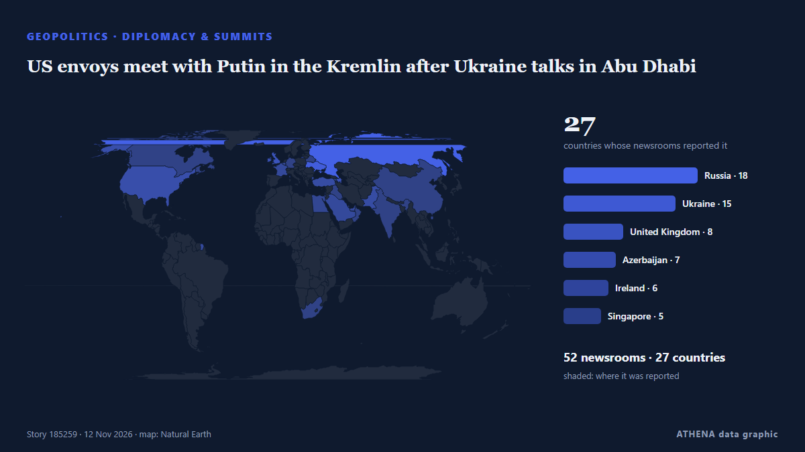

ATHENA Glaux Intelligence — Global news intelligence — every number explained
Every headline, checked across countries.
ATHENA Glaux reads 631 news outlets worldwide. A story becomes a verified event only when independent outlets report it. Each event shows who was first and a risk score with its reasons.
Reports drift in from independent outlets - when two meet on the same story, it becomes a verified event.
Three ways to read today
Start with the one that fits your timeVerified events
Ranked by how widely they are reported
- Eisenkot Warns Netanyahu Against New Iran Strikes Before Israel Forms Government159 outlets · 56 countriesRisk 4.7
- Trump says Gulf allies urged restraint on Iran, admits war hurt Republicans in midterms106 outlets · 44 countriesRisk 6.7
- US Offers Up to $20 Million Reward for Information on Iran’s Nuclear Program39 outlets · 26 countriesRisk 5.3
- Widespread Microsoft outage takes down Outlook and other 365 services52 outlets · 25 countriesRisk 6.2
- Scott Colom makes history in Mississippi. Two other Black men did the same 150 years before him46 outlets · 25 countriesRisk 4.2
Analysis Desk
Ask a question and read a reasoned assessment of a leading story, with what would prove it wrong.
Open the Analysis Desk ›How ATHENA checks a story
- CollectReports arrive from independent outlets in many countries.
- MatchWhen two outlets meet on the same story, it becomes a verified event.
- ExplainEach event shows who was first, how far it spread and why the risk is what it is.

GeopoliticsUS envoys meet with Putin in the Kremlin after Ukraine talks in Abu Dhabi
The Russian leader still believes he can outlast Western support for Ukraine. from Al Jazeera English
Russian ambassador to US Alexander Darchiev dies suddenly at 66
The announcement called Darchiev ‘an outstanding diplomat, an experienced leader, a kind friend, and a mentor’ from The Independent
Widespread Microsoft outage takes down Outlook and other 365 services
A Microsoft outage on Thursday affected users of services like Outlook, Teams and 365. from CNBC World

Eisenkot Warns Netanyahu Against New Iran Strikes Before Israel Forms Government
Israelis head to the polls on October 27 in a vote that will cast Prime Minister Benjamin Netanyahu and his right-wing and religious allies against a motley crew of opposition parties. from Responsible Statecraft
Trump says Gulf allies urged restraint on Iran, admits war hurt Republicans in midterms
With the political constraints imposed by the US midterm elections lifted, Donald Trump may become more erratic and unpredictable. from The Scotsman
US charges 3 men over alleged Iranian-backed plot at UK Fairford air base
The men, including one who is already in jail, face charges over alleged plot at UK air base used in US war on Iran. from Al Jazeera English
Geopolitics, Politics & Security
More ›Iran's Guards say they targeted a US early-warning radar in Bahrain
The Guards said the strike was in retaliation for what they described as an air attack on a telecommunications tower in Iran's southern Sirik county. from Free Malaysia Today
- Intelligence & espionage
Trump had urged Jensen Huang to fight for his job, New York Times reports
- Elections & politics
Lula to visit Madrid on Monday to meet Sánchez, two weeks before Spain’s election
- Elections & politics
With US midterms underway, courts rebuff Trump's pressure on state election officials
- Wars & conflicts
Hegseth pins medal on soldier who reprimanded his group for laughing at Tomb of the Unknown Soldier
Economics, Finance & Markets
More ›FBI says US has seized $1.2 bil. worth of cryptocurrency stolen from Binance
SINGAPORE: Cryptocurrency prices fell on Friday after Binance reported a potential security issue and said more than US$2.5 billion in assets had been frozen. from New Straits Times
- Stocks, bonds & markets
Rebounding AI stocks lift Wall Street
- Forecasts & recession risk
Xeneta Forecasts 30% Drop in Global Container Freight Rates by 2027
- Inflation & interest rates
Australian Dollar tests 0.68 as Fed hawks drive USD to 19-month high
- Inflation & interest rates
Brazil Interest Rate Cuts Stall on US Yields
Trade, Industry & Infrastructure
More ›ATI Secures Manila South Harbour Concession Renewal To 2063
Renewal provides long-term certainty for ATI to advance investment in port modernisation, innovation and sustainable infrastructure MANILA, PHILIPPINES – Media OutReach Newswire – 12 November 2026… from Laotian Times
- Aviation, rail & road
Vietnam Morning Monitor: France seeks to expand helicopter, frigate building cooperation, US looks to boost chicken exports to Vietnam
- Tariffs & export controls
Trump Threatens to Double Tariffs on Mexico if it Does Not Halt Migrants
- Shipping & ports
Auramarine to provide methanol fuel supply systems for hydrographic research vessels
- Construction & infrastructure
Marlink Secures BV Certification for XChange NextGen Platform
Energy, Resources & Environment
More ›- Climate & climate policy
COP31 participants say China injects impetus into global green development
- Climate & climate policy
World leaders clash over climate change talks at COP31
- Climate & climate policy
Fund for Energy Efficiency Technologies FEET is the first fund to adopt the Singapore-Asia Taxonomy for Sustainable Finance
- Climate & climate policy
The planet ‘is being killed’, Greta Thunberg tells Cop31 climate summit
Technology, AI & Cybersecurity
More ›Former Nvidia CEO Jensen Huang had a relationship with a second employee: Report
Washington's case for letting Nvidia sell H200 chips to China rested on case-by-case national-security screening. from DigiTimes Asia
- Software & cloud
Microsoft 365 outage enters second day as failed server recovery prolongs global disruption
- Artificial intelligence
EU leaders to hold first ever talks on AI in Dublin
- Cybersecurity
$400 Million In 18 Months: How North Korean Hackers Stole Money Using Images
- Chips & computing
Nvidia board reportedly preparing to oust CEO Jensen Huang amid affair and spy claims
Business, Companies & Investment
More ›Ex-Nvidia CEO Jensen Huang Agrees To Testify Before US Congress Amid Row
House Foreign Affairs Committee Chairman Brian Mast told reporters that Huang had tentatively agreed to appear before lawmakers on Wednesday night, shortly before his resignation from Nvidia. from NDTV
Today in numbers
| 08:00 | 608 |
|---|---|
| 09:00 | 850 |
| 10:00 | 765 |
| 11:00 | 374 |
| 12:00 | 371 |
| 13:00 | 331 |
| 14:00 | 767 |
| 15:00 | 452 |
| 16:00 | 510 |
| 17:00 | 910 |
| 18:00 | 491 |
| 19:00 | 609 |
| 20:00 | 778 |
| 21:00 | 550 |
| 22:00 | 587 |
| 23:00 | 450 |
| 00:00 | 251 |
| 01:00 | 330 |
| 02:00 | 319 |
| 03:00 | 398 |
| 04:00 | 370 |
| 05:00 | 673 |
| 06:00 | 308 |
| 07:00 | 334 |
Risk of today's events
Most widely covered
- Geopolitics
Eisenkot Warns Netanyahu Against New Iran Strikes Before Israel Forms Government
56 countries · 159 outlets - Economy & Markets
FBI says US has seized $1.2 bil. worth of cryptocurrency stolen from Binance
52 countries · 131 outlets - Geopolitics
With US midterms underway, courts rebuff Trump's pressure on state election officials
52 countries · 138 outlets - Geopolitics
Lula to visit Madrid on Monday to meet Sánchez, two weeks before Spain’s election
46 countries · 95 outlets - Geopolitics
Trump says Gulf allies urged restraint on Iran, admits war hurt Republicans in midterms
44 countries · 106 outlets
Emerging signals
- New name in the news · Active nowSirik
- Sudden surge · Active nowEuropean Political Community Summit
- Sudden surge · Active nowOutlook
- New name in the news · Active nowColette Kress
- Sudden surge · Active nowStarShield
Get ATHENA on Telegram
Join the free ATHENA Glaux group and receive the news the moment it is published here:
- breaking events with a risk of 6 or more
- an hourly round-up of the top events
- risk-tracker updates (Hormuz, Red Sea, Taiwan, sanctions and more)
- the daily briefing every morning at 10:00 (Athens time)
- a weekly outlook
- official warnings, emerging signals and rising risks
Tap the button, Telegram opens, press Join. Posts are in English; you can mute or leave at any time. No Telegram yet? It is free at telegram.org.
Risk trackers
More ›Global risk outlook — week 46, 2026 (9–15 Nov) ›